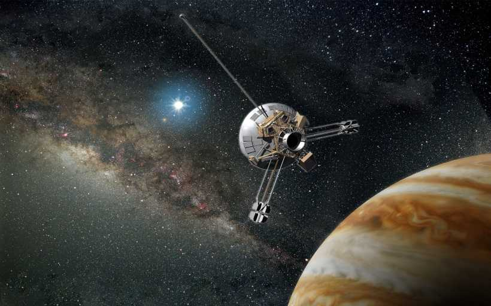

March 3, 1972 - launch of the first spacecraft, Pioneer 10, which left the limits of the solar system. Pioneer 10 (originally designated Pioneer F) is an American space probe, launched in 1972 and weighing 258 kilograms (569 pounds), that completed the first mission to the planet Jupiter. Thereafter, Pioneer 10 became the first of five artificial objects to achieve the escape velocity that will allow them to leave the Solar System. This space exploration project was conducted by the NASA Ames Research Center in California, and the space probe was manufactured by TRW Inc.
